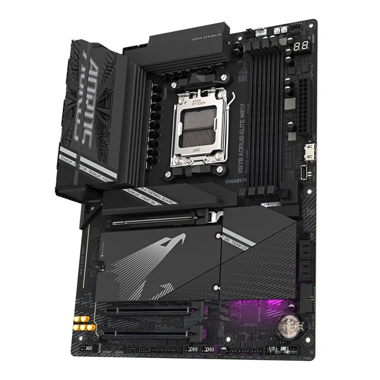

Motherboard
Motherboard menyediakan jalur komunikasi dan tempat pemasangan komponen: soket CPU, slot RAM, konektor penyimpanan, slot ekspansi, port, dan rangkaian pengatur daya. Ukuran ATX pada gambar adalah salah satu standar form factor. Papan ini seperti jalan dan titik temu komponen. Cek ukuran casing serta kecocokan soket, jenis RAM, dan konektor sebelum memilih motherboard; banyak komponen laptop dibuat khusus atau disolder.
| Jenis drive | Contoh laju transfer berurutan maksimum |
|---|---|
| HDD 5.400 RPM — Barracuda 2 TB ST2000DM005 | Hingga 190 MB/s sustained transfer OD (Seagate) |
| HDD 7.200 RPM — Barracuda 2 TB ST2000DM008 | Hingga 220 MB/s sustained transfer OD (Seagate) |
| HDD 7.200 RPM — IronWolf Pro 24 TB | Hingga 285 MB/s sustained transfer (Seagate) |
| SSD SATA | Hingga 560 MB/s (Samsung 870 EVO) |
| SSD NVMe PCIe 4.0 | Hingga 7.450 MB/s (Samsung 990 PRO) |
Contoh maksimum spesifikasi pabrikan, bukan hasil pengujian yang sama; kecepatan nyata berbeda menurut model dan beban kerja.
| Generasi | Laju transfer umum | Voltase |
|---|---|---|
| DDR / DDR1 | 200–400 MT/s | 2,5 V |
| DDR2 | 400–1.066 MT/s | 1,8 V |
| DDR3 | 800–2.133 MT/s | 1,5 V |
| DDR4 | 1.600–3.200 MT/s | 1,2 V |
| DDR5 | 3.200–7.200 MT/s | 1,1 V |
Kisaran umum menurut Kingston; kecepatan aktual bergantung pada modul, CPU, dan motherboard. Generasi DDR berbeda bentuk serta slotnya, jadi tidak dapat dipertukarkan.